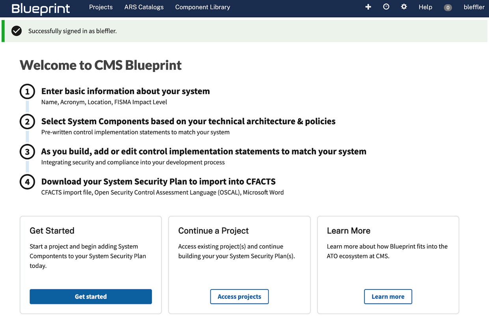
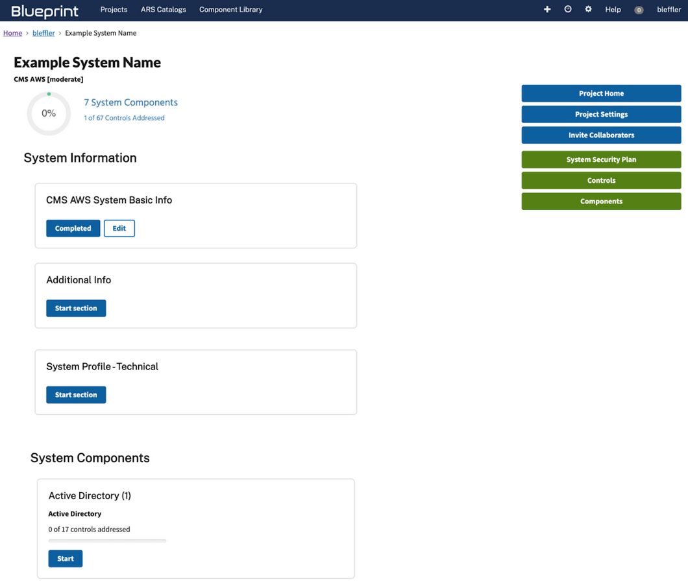
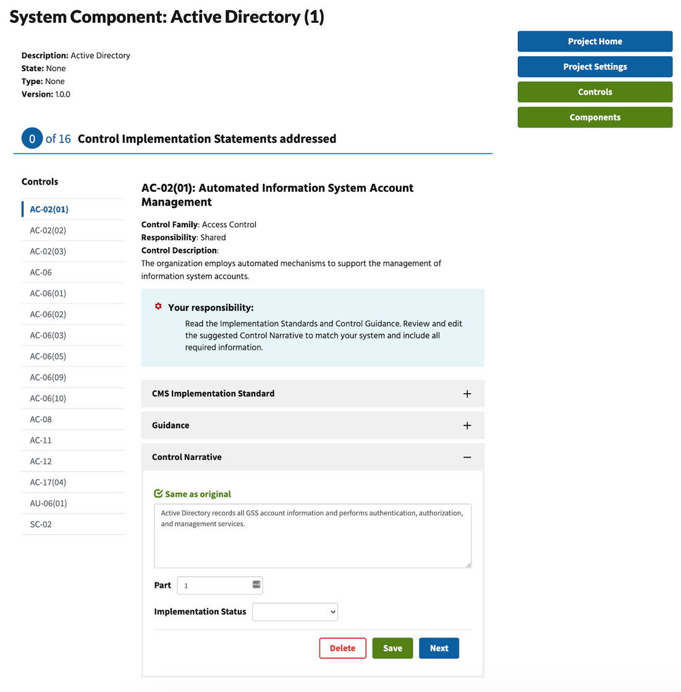
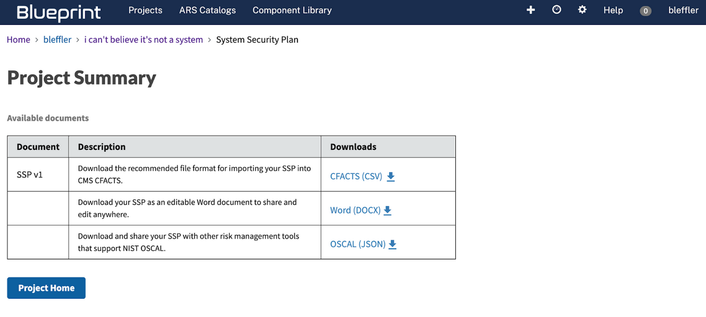

What is CMS Rapid ATO?
Every information system that integrates with CMS (or any Federal IT) must be authorized. For most, this means getting an Authority to Operate (ATO). In addition to meeting compliance requirements, this helps CMS manage risk and safeguard vital information. Read more about the ATO process.
The goal of CMS Rapid ATO is to move from burdensome, manual compliance to Compliance Automatization. Leveraging new tools and practices, we will speed up the process, reduce cost and encourage innovation for Business Owners, and improve compliance and risk management for CMS.
In addition to automating the building and maintenance of compliance documentation, Rapid ATO will provide the CMS Security and Privacy community with the information and tools to plan, launch and maintain secure, compliant software. The cost of updating and addressing compliance issues after implementation is typically greater than integrating security and privacy requirements during development. This site is intended to help teams prepare and shift compliance left in their development process
This website is a high-level resource intended to give an approachable understanding of security planning at CMS, not to include every detail. We link to additional information and resources, when appropriate. Specifically, this information is intended for Business Owners, Information System Security Officers (ISSOs), Developers—but we hope it is useful for anyone planning to build and innovate at CMS.
Rapid ATO aims to simplify and streamline the ATO process in three initiatives:
Iterative security planning
We don’t build software using waterfall methodologies any more. We build it iteratively so we can anticipate changes and adjust accordingly. This allows us to build better products cheaper. Why do we still do waterfall compliance?
By clarifying the ATO process and empowering product teams to plan for and address compliance requirements as they build their system, we can eliminate the cost and disruption of late surprises.
Instead of building a product and then completing compliance documentation after (waterfall), the Rapid ATO initiative integrates security planning into product development so as you build and iterate the product you can do the same for your security plan. Say goodbye to waterfall compliance. Say hello to iterative security planning.
Blueprint Digital Service for CMS
Security planning accounts for about 80 percent of the work needed to get an ATO. Additionally, anyone who’s worked through an ATO knows that writing security control implementation statements is one of the biggest challenges (see Develop and Assess phase).
The Rapid ATO shared responsibility model helps product teams manage risk and meet compliance requirements. By allowing the CMS hosting environment to take on certain responsibilities, you fully inherit some control narratives. This means you don’t have to write them. There are also shared controls, where the host is responsible for part of the narrative and the product team provides supplemental information to complete it.
To lessen the load and streamline the process, we’re introducing the Blueprint Digital Service platform. Blueprint guides you through security planning and simplifies the process by providing reusable compliance components that include draft control implementation statements.
Components match your system technologies and policies to recommended, pre-approved control narratives that satisfy requirements. In doing so, they enhance the creation, maintenance and understanding of System Security Plans (SSPs). They’ll also support gap analysis, automated verification and ongoing assessments and authorization.
Rather than writing hundreds of lengthy statements, Blueprint empowers you to add components that apply to your system, review and update the included control statements, and build an exportable SSP to upload to the CMS FISMA Controls Tracking System (CFACTS).
For example, if your system is using Splunk to track audit logs and Confluence to manage information, you can select the Splunk and Confluence components and Blueprint will suggest control implementation narratives for your system. Rather than writing the statements from scratch, you can simply review and edit/augment the statements as needed. This also allows you to build your SSP as you build your system.
ISPG along with a team of experts are building Blueprint specifically for CMS to make compliance smarter, not harder.
CMS Compliance Library
Reusable system components and compliance as code will modernize the ATO process and integrate security and compliance into the System Development Life Cycle (SDLC). That’s why we’re making components available to all in our CMS Compliance Library. By welcoming users across CMS to access and contribute to the Compliance Library, the Rapid ATO initiative will scale iterative security planning throughout the agency.
Security and compliance checks will still need to be verified at the system level, but an accessible Compliance Library will prevent each project team from reinventing the components wheel. Additionally, the library will include applicable statutes, incident response plans, configuration management plans, points of contact, and other helpful information.
This will help developers build compliance into the development process, and create initial SSPs with vetted, managed, component-based control implementation statements. It will also ease system audits with continuous monitoring and authorization. Time to renew the library card.